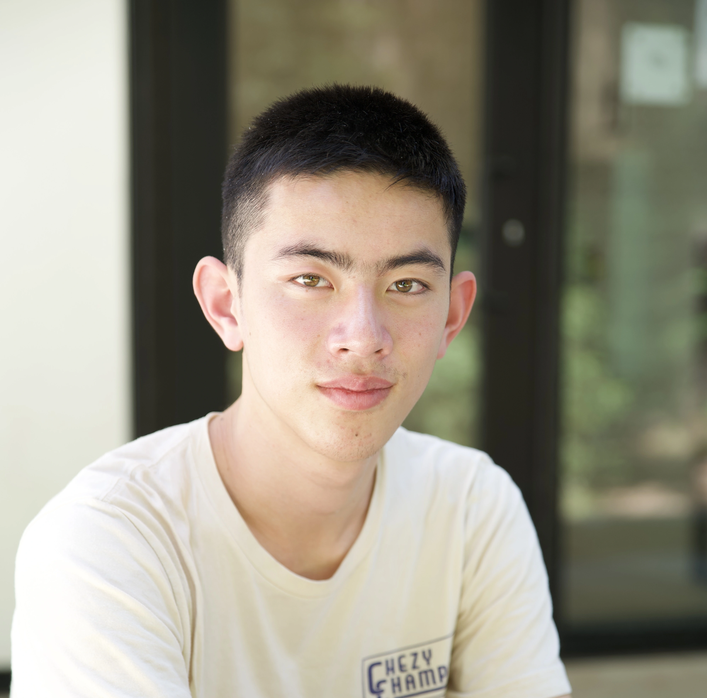
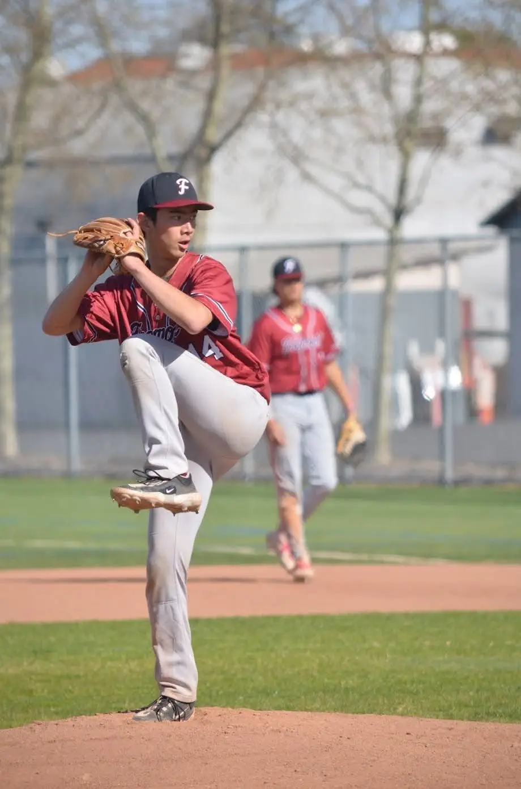
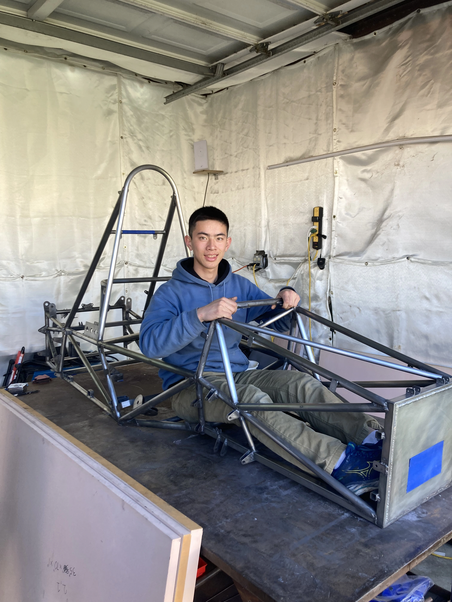

About Me
Mechanical Engineering Student at UC Berkeley
I'm an easily fascinated student interested in the variety of ways to apply engineering to solve problems around us. You can find me doodling blueprints, working on CAD models, and covering my whiteboard with sketches.

Background
My name is Oliver, and regardless of the materials or tools available to me, I love to build stuff! From origami animals to wooden tables to metal (+ 3D printed) robots, I've been expanding my growing toolbox with every project.
My mechanical design experience first stemmed from 2D blueprints for carpentry projects that grew into 3D CAD for FRC robot design. Now a FIRST Robotics alumni, I'm an avid volunteer at local bay area competitions, judging and sharing my knowledge.
Today, I'm branching my engineering toolsets towards a variety of exciting engineering projects. I've applied the theory from coursework theory across teams, including the chassis subteam of Formula Electric @ Berkeley (FEB), harnessing the ocean's power with TAFLAB, or tinkering with personal projects. This includes utilizing ANSYS, Python, tradition, and advanced manufacturing techniques to realize performance and to bring complex designs to life.
Hobbies
When I'm looking to decompress, I turn to the outdoors. I've worked at various scout camps for the past three summers and enjoy the serenity of the wind blowing across trees mixed with the chaos of scouting activities. As an avid trial runner, mountain biking, and backpacker, I'm always looking to embark on new adventures!



Credits
The repository and code for the site can be found through github. Loads of photos captured by @tejas_manjunatha_